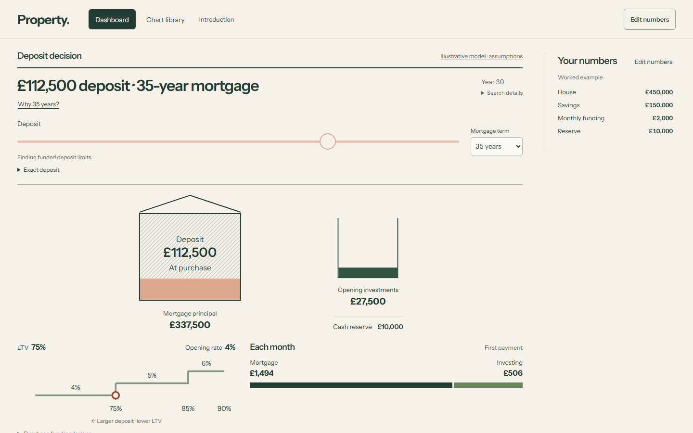
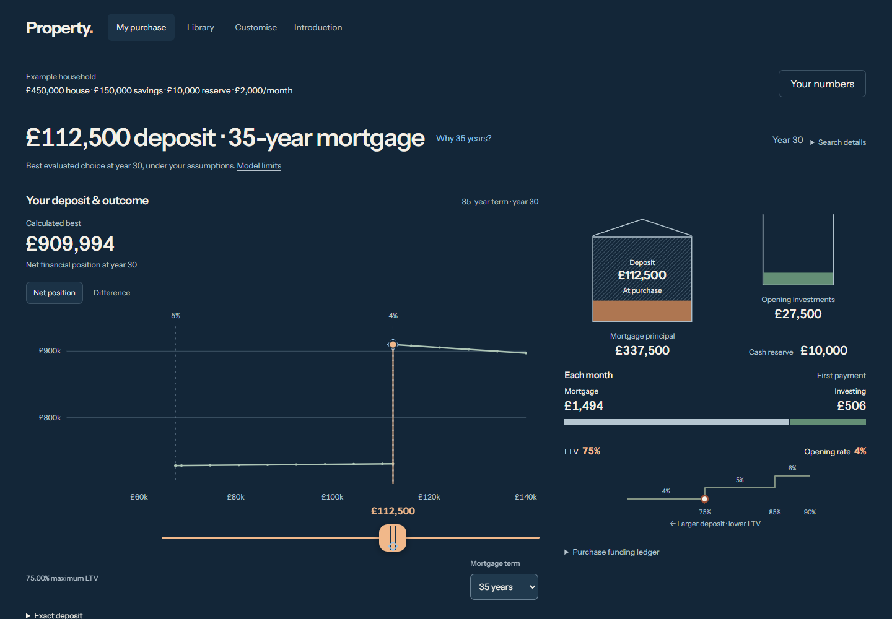
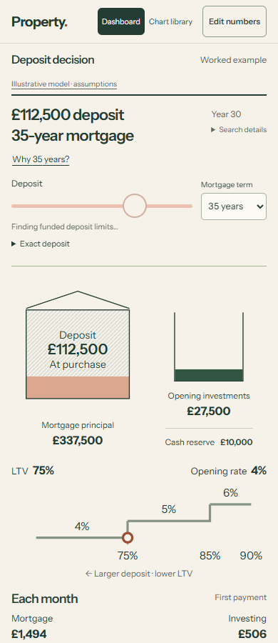
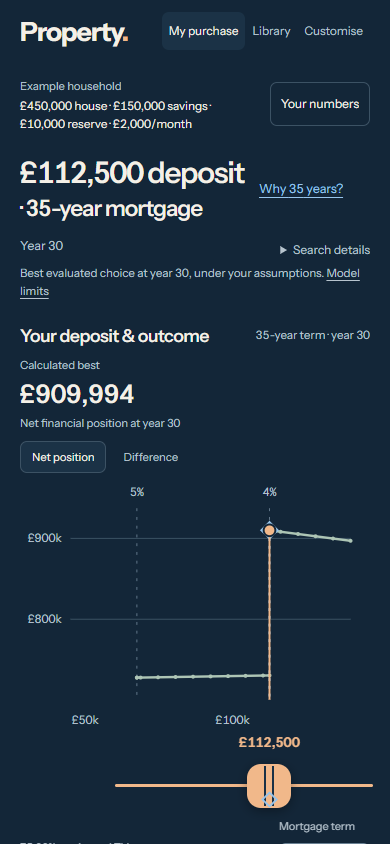
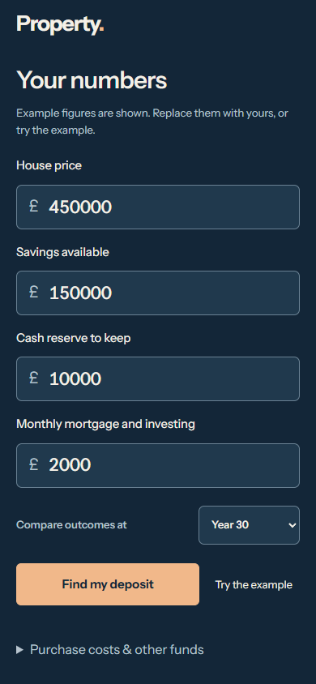
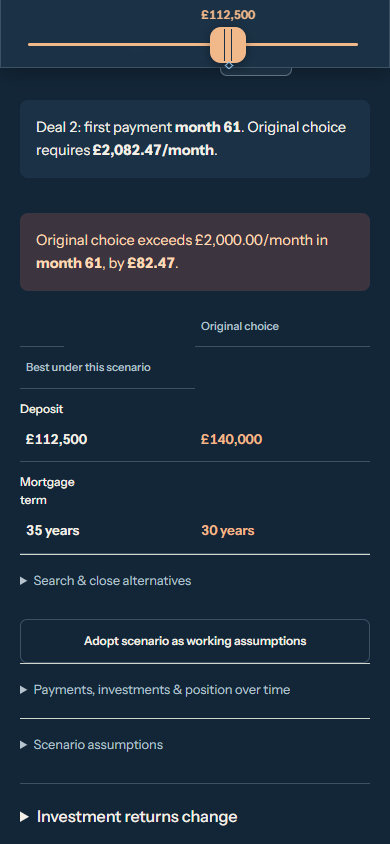

The buyer’s first journey
Enter household figures, find the best evaluated deposit and term, explore the deposit beside its consequence, then test a higher mortgage deal. This is a design-only revision using the unchanged R4-v4 exploratory provider.
Open R4-v5 Draft source PR Previous review
What changed
The first screen is a single household form, with a separate example route. A compact summary reopens the populated form. The outcome curve, warm deposit handle and cool best marker share one monetary axis; opening investments, reserve and monthly funding sit beside the curve on desktop and below it on a phone.
Term evidence opens from the decision. Near-best alternatives precede the experiments, with one experiment open at a time. The rate editor uses a focused 0–10% frame, with the full supported 0–25% range available. Original and revised purchase choices stay beside or directly below it. The later allocation and timeline share their own viewed-year control.
Desktop: before and after


Phone: before and after




Ordinary journeys, recorded at 1×
Continuous browser recordings include calculation waits, first entry, personal calculation, editing, the separate example route, slow and rapid deposit reversal, a pricing boundary, funding limits, term evidence, a higher second fixed deal and a changed viewed year. Phone input is trusted CDP touch emulation; it is not a physical-device test.
Interaction note for the engine discussion
Windows Chrome on this machine, with desktop mouse and phone-sized CDP touch input. Drag slowly, move rapidly across the 75% LTV boundary, reverse twice, then use Home and End. The handle followed the gesture. Available matching complete plans appeared immediately; off-grid requests retained the previous completed financial state with its deposit identified, then applied the latest matching response together. The curve’s domain stayed fixed during the gesture.
| Journey | Input → handle frame median / maximum | Input → matching figures median / maximum | Samples |
|---|---|---|---|
| desktop | 2.0 / 8.2 ms | 8.2 / 567.9 ms | 3 matching; 59 superseded |
| phone | 1.7 / 7.8 ms | 7.2 / 418.6 ms | 3 matching; 58 superseded |
Measured from the browser’s input event to the next rendered animation frame, and separately to a rendered matching plan with pending state cleared. Superseded gestures do not count as completed results. This excludes hardware input latency and is not an engine benchmark. Local test-server failures and test-harness corrections are recorded in verification; no provider performance changes were made.
Verification
- 24 JavaScript tests; 73 provider tests; 10 preserved introduction tests.
- 23 complete worker responses exactly equal CPython, including Decimal strings.
- 4,730 backend tests passed; Ruff and strict mypy across 53 source files passed.
- Desktop and phone journeys verify personal entry, edit, example, exact entry, rapid reversal, boundary and funding bounds, term evidence, rate consequence and separate viewed year.
- All 20 library views and customisation checked at desktop and phone widths.
- 1440px, 390px and 320px rendered screens; 200% root text at 320px; reduced motion; no detected axe violations in tested states.
- Provider, worker, runtime, fonts and introduction source bytes preserved. Independent scoped source review findings resolved.
Independent review identified and resolved a no-funded render error, a discrete-choice rail alignment error, requested-term bounds leaking into the displayed curve, and explicit smooth scrolling under reduced motion. Matching provider and introduction bytes were preserved.
Not performed: physical-device, Safari/Firefox, novice comprehension, spoken screen-reader or browser-zoom certification. Enlarged text means a 200% root font in Chrome. Financial assumptions, search policy and the provider’s existing limitations remain unchanged.
Exact source identities
| Full PR31 baseline | 73d7750812bd422a2583c75b9d2c07ae14a0e145 |
|---|---|
| R4-v4 recorded application | 2e630537d6f5b9e048eb47011f68c37335ba8941 |
| R4-v4 review wrapper | 4d234acf24ef0cb6e4009b0d36cfee2fd73c7d10 |
| R4-v4 public deployment | 702ca35f08204cd728c49f94697513012e90c2e8 |
| R4-v5 recorded application | 882b03cb7659a4056eca06b7194f291e407642e0 |
Recorded application assets are bound by SHA-256 in the journey report. The publication receipt binds the source wrapper and public asset commit; the source publication record identifies the exact Pages deployment. No merge.
Visual review
Without instruction, can a buyer enter their figures, identify the calculated deposit and term, move the deposit and understand the changed outcome, then tell whether a higher renewal rate changes the original decision?